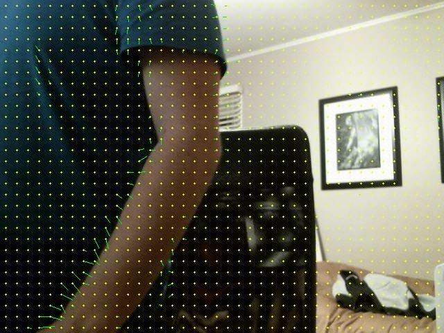
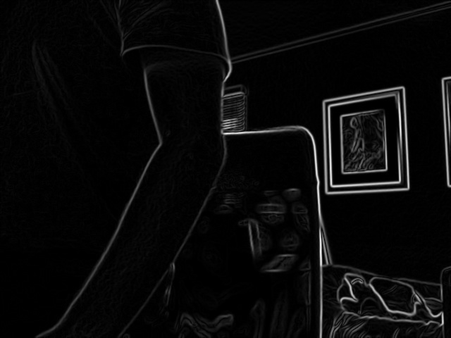
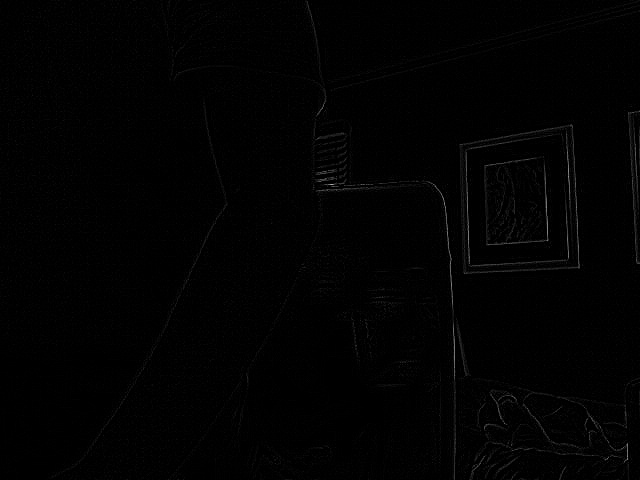
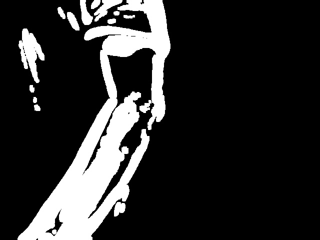

This page is a convient way to view all the intermitent images used in the tracking application. They are recorded into a table format for convience.
| Original | Motion | Optical Flow |
|---|---|---|
|
 | |
| Absolute Difference | Gradient Magnitude | Laplacian |
|  |  | |
| Threshold | ||
|  |